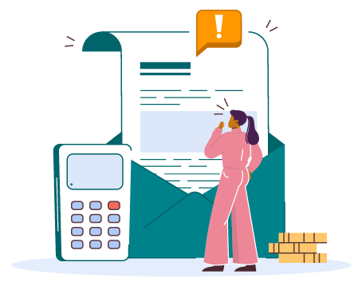
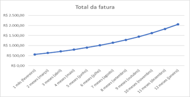

No dia a dia, as pessoas são expostas a muitas tentações de consumo:
Tomadas pela emoção ou, até mesmo, por distração, fazem compras por impulso, adquirindo algo que não precisam. Não raro, após a compra, surgem os sentimentos de culpa e arrependimento, causando impacto negativo no meio ambiente e na sociedade.
E não são poucas as pessoas que caem nessa cilada. Uma pesquisa divulgada pelo SPC-Brasil e pela CNDL revelou que 37% dos consumidores admitem ter comprado algo que não precisavam nos últimos 30 dias.
A porcentagem pode ser compreendida com base na ideia de razão. Por exemplo, conforme a pesquisa, cerca de 37% dos consumidores admitem ter comprado algo desnecessário. Isso significa que 37 em cada 100 brasileiros têm essa atitude. Na figura a seguir, as pessoas em vermelho representam essa porcentagem em relação ao total de pessoas.

A ilustração contém a representação de pessoas organizadas em dez colunas e dez linhas, no total, são 100 pessoas. Há 63 pessoas na cor azul e 37 pessoas na cor vermelha.
Da mesma forma, é possível representar uma porcentagem por meio de fração e de número decimal. Observe:
Cálculo em que 37 por cento é igual a 37 dividido por 100, que também é igual a 37 décimos.
É muito importante esse cálculo para descontos e acréscimos em produtos ou serviços, pois é necessário transformar a porcentagem em decimal.
Veja a seguir uma reportagem sobre esse tema.

As famílias recorreram mais ao crédito para sustentar o consumo
“[...] De acordo com o levantamento, o último ano apresentou recorde do total de endividados, registrando uma média de 71% das famílias brasileiras, enquanto dezembro alcançou o patamar máximo histórico com 76% do total de famílias. Segundo a CNC, as famílias recorreram mais ao crédito para sustentar o consumo[...].” (CAMPOS, 2022).
Dívidas são um assunto preocupante. Problemas podem surgir ao não saber lidar bem com elas. Por exemplo, quando um boleto bancário é pago após o vencimento, seu valor é acrescido de taxas correspondentes a multas e juros. O endividamento excessivo pode trazer consequências financeiras e, até mesmo, morais. Por isso, é importante ter a vida financeira organizada de modo a planejar o pagamento de despesas essenciais, como faturas de água e energia elétrica, além de boletos bancários diversos, até as datas de vencimento.
Escute o podcast a seguir ou clique no ícone para ler a transcrição e saber o que Emília está dizendo.
Observe as etapas que podem ser utilizadas para responder à pergunta da Emília.


Calcula-se o valor do acréscimo, ou seja, 4% de R$ 190,00. Não se esqueça de que o acréscimo está em percentual e, para realizar os cálculos, deverá ser deixado em decimal, que é a taxa dividida por 100.
Cálculo em que quatro por cento é igual a quatro dividido por 100, que é igual a quatro centésimos. Abaixo, quatro centésimos multiplicados por 190 é igual a sete vírgula 60, ou seja, sete reais e 60 centavos.
Adicionar o acréscimo calculado ao valor do boleto do condomínio:
Cálculo em que 190 mais sete vírgula sessenta é igual a 197 vírgula 60, ou seja, 197 reais e 60 centavos.
Assim, Emília pagará ao todo R$ 197,60
Emília precisa ligar o sinal de alerta, pois teve que pagar a fatura apresentada com atraso. Normalmente, as pessoas consideram-se endividadas apenas quando não estão mais dando conta de pagar suas dívidas. Isso não é verdade. Quando não se consegue mais pagar as dívidas assumidas, já é considerado um endividamento excessivo, um patamar de endividamento preocupante.
Geralmente, quando a pessoa não tem dinheiro suficiente para alguma compra ou serviço, ela acaba recorrendo ao uso de algum crédito. O crédito é uma fonte adicional de recursos que não são seus, mas obtidos de terceiros, como bancos, financeiras, cooperativas de crédito e outros, possibilitando a antecipação do consumo para a aquisição de bens ou contratação de serviços. Existem várias modalidades de crédito, por exemplo:
É possível verificar nas mídias que o maior vilão do endividamento é o cartão de crédito.
Especialistas orientam evitar rotativo do cartão
“[...] Muito do escalonamento que faz a dívida no cartão se transformar em uma bola de neve são os chamados juros compostos – uma fórmula de cálculo que aplica ‘juro sobre juros’. O valor cobrado vai aumentando cada vez mais porque os juros são aplicados seguidamente em cima de um valor que já estava atualizado e corrigido.
‘Acontece quando deixamos de pagar a dívida contraída via cartão de crédito’, resume o diretor da Anefac, Miguel José Ribeiro de Oliveira. Juros compostos são usados em todo o mundo, pondera Oliveira.
Segundo Oliveira, os juros rotativos médios, no Brasil, estão atualmente na faixa de 12,5% ao mês, o que significa um total de 329,3% ao ano. Em termos práticos, isso significa que, em 30 dias, uma dívida de R$ 1 mil se transforma em R$ 1.125,20.
Em um ano, esse valor aumentaria 329,3%, chegando a quase R$ 4.300. Um levantamento da Proteste mostra que os juros cobrados pelos cartões podem chegar a 875,25% ao ano – o que transformaria a dívida de R$ 1 mil em quase R$ 10 mil no acumulado de 12 meses.
‘A mesma dívida [de R$ 1 mil], sendo parcelada em 12 meses com taxa de juros média de 8,34% ao mês [taxa média dos juros parcelados, segundo o Banco Central], corresponde a 161,5% ao ano. Nesse caso, o consumidor pagaria 12 parcelas mensais fixas de R$ 235,04, o que totaliza um valor final de R$ 1.620,48’, complementa o diretor da Anefac.” (PEDUZZI, 2021).
Conforme o relatado na reportagem, leia com atenção o caso a seguir utilizando juros compostos do cartão de crédito.
Juros compostos: Os juros compostos são aqueles em que os juros do mês são incorporados ao capital.
Crédito rotativo: Os juros do cartão de crédito também são conhecidos como juros rotativos ou crédito rotativo. É como se o banco estivesse emprestando “mais dinheiro”, além do seu limite de crédito.
Veja a simulação a seguir.
Ana Maria é funcionária de uma empresa e recebe um salário mínimo brasileiro pelo serviço prestado, que corresponde a R$ 1.212,00 (ano-base 2022). No mês de fevereiro, ela começou a separar os boletos a serem pagos.

Ana Maria se deparou com um gasto não previsto, as compras de Natal pagas com o cartão de crédito, utilizado no mês de dezembro. Mas ela não pagou em janeiro, pois gastou além do seu salário, deixando para pagar em fevereiro, já que, no cartão, as compras não tinham juros.
A fatura do cartão de crédito em janeiro foi de R$ 500,00.
Com o atraso, o valor da fatura de fevereiro teve acréscimo de 12,5%, que é o valor dos juros rotativos do cartão de crédito. Veja como ajudar Ana Maria a realizar os cálculos necessários para prever como ficará o valor da fatura.
Nas condições apresentadas, para calcular o juro no valor da fatura, deve-se multiplicar a taxa de juros pelo valor da fatura. Não se esqueça de que a taxa de juros está em percentual e, para realizar os cálculos, deve-se deixá-la em decimal, que é a taxa dividida por 100. O cálculo da fatura de fevereiro ficaria assim:
Cálculo de juros: inicia com abre parênteses, 12 inteiros vírgula cinco décimos, com o traço abaixo de divisão por 100, fecha parênteses e, à direita, sinal de multiplicação por 500.
Cálculo de zero vírgula 125 milésimos multiplicados por 500.
Resultado número 62 inteiro vírgula cinco décimos.
Juros, sinal de mais, fatura anterior, dois-pontos, 62 reais e 50 centavos, sinal de mais, 500 reais, sinal de igual, 562 reais e 50 centavos.
Se ela atrasar a fatura de março também, como ficará seu valor? Lembre-se de que a taxa de juros deve ser multiplicada pelo novo valor da fatura, ou seja, R$ 562,50.
Cálculo de juros: inicia com abre parênteses, 12 inteiros vírgula cinco décimos, traço abaixo de divisão por 100, fecha parênteses e, à direita, sinal de multiplicação por 562 inteiros e 50 décimos.
Cálculo de 125 milésimos multiplicados por 562 inteiros e 50 décimos.
Resultado número 70 inteiro vírgula 31 décimos.
Juros, sinal de mais, fatura anterior, dois-pontos, 70 reais e 31 centavos, sinal de mais, 562 reais e 50 centavos, sinal de igual, 632 reais e 81 centavos.
Para saber os juros gerados ao longo de um ano, veja a tabela a seguir.
| 1 mês (fevereiro) | R$ 562,50 |
| 2 meses (março) | R$ 632,81 |
| 3 meses (abril) | R$ 711,91 |
| 4 meses (maio) | R$ 800,90 |
| 5 meses (junho) | R$ 901,02 |
| 6 meses (julho) | R$ 1.013,64 |
| 7 meses (agosto) | R$ 1.140,35 |
| 8 meses (setembro) | R$ 1.282,89 |
| 9 meses (outubro) | R$ 1.443,25 |
| 10 meses (novembro) | R$ 1.623,66 |
| 11 meses (dezembro) | R$ 1.826,62 |
| 12 meses (janeiro) | R$ 2.054,95 |
Tabela 1 – Total de um ano de juros
Fonte: Sesc EJA EAD (2022)
Ao observar a tabela, note que a coluna do total de cada fatura apresenta uma sequência e aumenta seguindo o padrão de multiplicação de 1,125. Esse valor é chamado de razão da sequência. Toda essa sequência é chamada de progressão geométrica, pois o seu crescimento considera a multiplicação como um meio de encontrar o próximo termo.
Além disso, é possível construir o gráfico de crescimento dos juros, com a ajuda de um software de planilhas eletrônicas.

Figura 1 – Gráfico total da fatura com o crescimento dos juros por mês
Fonte: Sesc EJA EAD (2022)
Gráfico do total da fatura. No eixo vertical, há os valores em reais de baixo para cima, iniciando em zero seguido de quinhentos, mil, mil e quinhentos, dois mil e dois mil e quinhentos. No eixo horizontal, há o tempo em meses, da esquerda para a direita, iniciando com um mês (fevereiro), dois meses (março), três meses (abril) e assim sucessivamente até chegar a 12 meses (janeiro). No meio do gráfico, há uma linha curvada para cima, representando um crescimento exponencial.
No gráfico, é possível observar um crescimento exponencial, pois os juros sobre a fatura do cartão de crédito são compostos. O crescimento exponencial significa crescer várias vezes rapidamente, parecendo tornar-se matematicamente “incontrolável” ou exponencial. À medida que a quantidade aumenta, aumenta também a taxa na qual ele cresce.
Levando-se em consideração a situação analisada da Ana Maria, dentro de seis meses, a dívida dela vai dobrar e, em um ano, será quatro vezes maior do que o valor gasto inicialmente, superando o salário que ela recebe por mês e impossibilitando o pagamento da dívida. Por isso, deve-se ter cuidado com o atraso no pagamento de dívidas.
É importante, para a sua vida financeira, escolher a modalidade de crédito mais adequada a cada situação. Com a compreensão dos custos envolvidos nas operações de crédito, é possível usar o crédito de forma mais consciente e assertiva. Contudo, se você já estiver em uma situação de superendividamento, a boa notícia é que existem meios para sair dessa situação. No entanto, isso exigirá de você algumas atitudes. Veja os passos do Caderno de Educação Financeira (Banco Central do Brasil, 2013):
Ter a consciência de que se está em uma condição de endividamento excessivo e de que é preciso resolver essa situação é um passo fundamental para a saída do endividamento.
Após ter consciência do endividamento e ter certeza de que quer sair dessa situação, é importante conhecer o real tamanho da dívida.
Compartilhar as dificuldades com pessoas que já tenham passado por situações semelhantes ou que tenham conhecimentos que possam ajudar nessa tarefa é um passo importante para a saída do endividamento.
Outro ponto fundamental para garantir a saída de tão incômoda situação é não fazer novas dívidas.
Negociar condições mais vantajosas para o pagamento das dívidas é outro aspecto fundamental para a saída do endividamento.
Outra ação imprescindível para a saída do endividamento é o corte de gastos.
Muitas vezes, seu orçamento já está no limite suportável, encontrando-se deficitário. Adicionalmente à minimização de gastos, avalie uma alternativa para ampliar sua renda.
Lembre-se de buscar ajuda, seja por meio de leituras, consultorias ou órgãos de defesa do consumidor, pois é uma opção válida e eficaz para a saída do endividamento.
Assista ao vídeo a seguir para saber como evitar o endividamento.
Após compreender o significado de cada expressão, é preciso ler sobre a importância do recolhimento dos impostos. Confira a seguir o trecho do artigo Compreender a Importância dos Impostos Contribui para uma Educação Fiscal Adequada, retirado do site Diário do Nordeste (2021):

Fundamental para o desenvolvimento de políticas públicas em todo o Brasil, o pagamento de impostos precisa ser investido de forma a trazer retorno para a população
Parte integrante do cotidiano da população brasileira, o pagamento de impostos é uma das principais formas do Estado de arrecadar recursos para desenvolver políticas públicas e realizar investimentos na sociedade. A partir dos valores arrecadados, se torna possível o financiamento de ações em áreas como saúde, educação, cultura, segurança e outras. Dessa forma, compreender a importância de se pagar impostos contribui para a criação de uma consciência cidadã.
Os impostos são cobrados de diferentes formas e estão presentes no dia a dia, embutidos em vários itens, desde produtos de primeira necessidade, como os alimentos adquiridos em supermercados, até transações financeiras de uma parcela específica do mercado. Confira os principais impostos e os níveis de governo aos quais correspondem:
Segundo Fernanda Araújo (s.d.), do site Serasa Ensina, o IR
[...] é um tributo federal – como diz o nome – sobre a renda. Ou seja, sobre o que você ganha. E ainda acompanha a sua evolução patrimonial. Para fazer esse acompanhamento, o governo solicita aos trabalhadores e empresas que informem para a Receita Federal quais são seus ganhos anuais.
De acordo com o Portal Tributário (s.d.), “o imposto sobre produtos industrializados (IPI) incide sobre produtos industrializados, nacionais e estrangeiros. Suas disposições estão regulamentadas pelo Decreto 7.212/2010 (RIPI/2010)”.
Segundo o portal Invest e Export Brasil (s.d.), do governo federal, “o Imposto de Importação (II) incide sobre mercadoria estrangeira, bem como sobre bagagem de viajante e bens enviados como presente ou amostra, ou a título gratuito”.
No site da Prefeitura de Itaporanga (s.d.) consta que “o Imposto sobre a Propriedade Territorial Rural (ITR) é um tributo federal que se cobra anualmente das propriedades rurais. Precisa ser pago pelo proprietário da terra, pelo titular do domínio útil ou pelo possuidor a qualquer título”.
Fernanda Araújo (s.d.), do site Serasa Ensina, diz que “o IOF é a sigla de Imposto sobre Operações Financeiras. [...] Entre as mais comuns estão crédito, câmbio e seguros”.
Segundo Leite (2019), “é o imposto que incide quando um produto ou serviço tributável circula entre cidades, estados ou de pessoas jurídicas para pessoas físicas (como quando uma loja de eletrodomésticos vende um micro-ondas para um cliente”.
De acordo com o Portal Tributário (s.d.), o IPVA “é um imposto estadual pago anualmente pelo proprietário de todo e qualquer veículo automotor ao qual seja exigido emplacamento”.
No site do governo do Brasil (2021), entende-se o seguinte sobre o ITCD:
O imposto deve ser pago quando:
- Bens ou direitos que pertenciam a uma pessoa falecida são transferidos para os seus herdeiros;
- Uma pessoa faz uma doação a outra.
Joyce Carla (s.d.), do site Serasa Ensina, explica que “o Imposto Predial e Territorial Urbano é – como diz o nome – um imposto cobrado de quem tem um imóvel urbano. Pode ser casa, apartamento, sala comercial ou qualquer outro tipo de propriedade em uma região urbanizada”.
Segundo Torres (2021),
O Imposto Sobre Serviços (ISS) é um tributo que incide na prestação de serviços realizada por empresas e profissionais autônomos. Ele é recolhido pelos municípios e pelo Distrito Federal e também é conhecido como Imposto Sobre Serviços de Qualquer Natureza (ISSQN). Quase todas as operações envolvendo serviços geram a cobrança deste tributo, o que faz dele extremamente importante.
De acordo com o blog Embracon (s.d.),
a sigla ITBI significa Imposto de Transmissão de Bens Imóveis, deixando claro qual a finalidade dessa taxa. Ele é pago ao município durante a compra do imóvel, seja ele de qualquer tipo, e a finalização do processo só é feita após o pagamento dessa tarifa. Caso contrário, a transferência não pode ser realizada e os documentos não são liberados.
Confira o exemplo do cálculo do IPVA de um determinado veículo. Inicialmente, é preciso verificar a alíquota estipulada pelo Estado em que o veículo será cadastrado/emplacado.
| Alíquotas do IPVA 2022 em cada Estado brasileiro | ||
|---|---|---|
| Acre 2% | Maranhão 2,5% | Rio de Janeiro 4% |
| Alagoas 3% | Minas Gerais 4% | Rio Grande do Norte 3% |
| Amazonas 3% | Mato Grosso 3% | Rio Grande do Sul 3% |
| Amapá 3% | Mato Grosso do Sul 3,5% | Rondônia 3% |
| Bahia 2,5% | Pará 2,5% | Roraima 3% |
| Ceará 3% | Paraíba 2,5% | Santa Catarina 2% |
| Distrito Federal 3,5% | Paraná 3,5% | Sergipe 2,5% |
| Espírito Santo 2% | Pernambuco 3% | São Paulo 4% |
| Goiás 3,75% | Piauí 2,5% | Tocantins 2% |
Tabela 2 – Alíquotas do IPVA 2022
Fonte: <https://garagem360.com.br/calcule-o-ipva-2022-e-saiba-quanto-voce-ira-desembolsar-para-o-tributo/>. Acesso em: 11 abr. 2022.
As alíquotas são específicas para cada Estado brasileiro e, neste exemplo, será utilizada a alíquota do Estado de São Paulo. Considerando esse dado, juntamente ao valor do veículo, segundo a tabela FIPE, basta multiplicar um pelo outro para chegar ao valor aproximado do tributo, como no exemplo a seguir:
Segundo a tabela FIPE, um carro popular específico, ano 2020, tinha valor de R$ 56.290,00 em setembro de 2021. Caso o veículo seja cadastrado no Estado de São Paulo, a alíquota praticada será de 4%.
Dessa forma, basta multiplicar o valor total do veículo pela alíquota:
Cinquenta e seis mil, duzentos e noventa reais multiplicado por quatro por cento.
Cinquenta e seis mil, duzentos e noventa reais multiplicado por quatro centésimos.
Igual a dois mil, duzentos e cinquenta e um reais e sessenta centavos.
Por meio do cálculo, o IPVA 2022 do modelo será de R$ 2.251,60.
A tributação, ou seja, o percentual praticado sobre o valor do produto é específico de cada tipo de imposto, fazendo uma relação com a esfera na qual pertence, seja ela federal, estadual ou municipal. Fique atento e considere esses valores no seu orçamento anual. Entender como funciona o cálculo dos impostos é uma maneira de organizar o orçamento futuro, porque os impostos incidem sobre os mais diversos produtos e serviços, gerando um custo mais elevado e diminuindo o poder de compra, chegando inclusive à mesa dos brasileiros.
Segundo levantamento do Instituto Brasileiro de Planejamento e Tributação (IBPT), os produtos da cesta básica podem atingir quase 38% de encargos no trajeto até a mesa do consumidor. Dessa forma, conclui-se que quase a metade (50%) do valor total da cesta básica é imposto. Observe a figura a seguir para compreender melhor a situação:

Figura 5 – Cesta básica
Fonte: Sesc EJA EAD (2022)
A figura mostra uma cesta básica com diversos produtos dentro. Na cesta, está marcada a parte que corresponde a trinta e oito por cento e uma outra parte de sessenta e dois por cento.
Nessa mesma situação, é possível representar a porcentagem por meio de fração e de número decimal. Observe:
Trinta e oito por cento é igual a trinta e oito dividido por cem que também é igual a trinta e oito décimos.
Transformando a porcentagem em decimal, consegue-se realizar o percentual que incide sobre o valor da cesta. Observe as informações a seguir:

O Departamento Intersindical de Estatística e Estudos Socioeconômicos (Dieese), em 9 de março de 2022, publicou uma nota à imprensa, cujo trecho diz o seguinte:
[...] São Paulo foi a capital onde a cesta apresentou o maior custo (R$ 715,65), seguida por Florianópolis (R$ 707,56), Rio de Janeiro (R$ 697,37), Porto Alegre (R$ 695,91) e Vitória (R$ 682,54). Nas cidades do Norte e Nordeste, onde a composição da cesta é diferente das demais capitais, os menores valores médios foram registrados em Aracaju (R$ 516,82), Recife (R$ 549,20) e João Pessoa (R$ 549,33) [...].
Para o cálculo de exemplo, serão utilizados os dados de São Paulo como referência. O valor da cesta básica é de R$ 715,65, sendo que 38% desse valor são tributos. Logo, para o cálculo, é preciso transformar o percentual em decimal e multiplicá-lo pelo valor da cesta.
(trinta e oito por cento multiplicado por setecentos e quinze reais com sessenta e cinco centavos)
(trinta e oito dividido por cem e depois multiplicado por setecentos e quinze reais com sessenta e cinco centavos)
(trinta e oito décimos multiplicado por setecentos e quinze reais com sessenta e cinco centavos)
(duzentos e setenta e um com noventa e quatro centavos)
Portanto, o valor que corresponde ao tributo é de R$ 271,94 da cesta básica de São Paulo, em 2022. A partir do cálculo matemático, é possível analisar exatamente o quanto se está pagando de tributos e esse cálculo pode ser realizado nos demais produtos e serviços cujos tributos você tenha interesse em descobrir. O site Impostômetro disponibiliza uma grande lista de produtos e o percentual de tributos que incidem sobre eles.
Realize os exercícios para testar seus conhecimentos. Lembre-se de que suas respostas não ficarão salvas, pois esta não é uma atividade avaliativa.
1) Como visto anteriormente, nos produtos e serviços adquiridos, uma parte do valor pago corresponde a tributos que são cobrados pelos governos federal, estadual ou municipal. De acordo com o Impostômetro (2019), o percentual aproximado do tributo de uma geladeira é de 46%. Com essa informação, calcule qual seria o valor da geladeira sem o tributo:

Imagem de uma geladeira duplex branca, com o valor de dois mil, cento e trinta e nove reais.
2) A cena a seguir é muito comum no dia a dia. Aplicando os conhecimentos de organização e planejamento que você estudou, qual seria a melhor estratégia para que, definitivamente, essa pessoa não gaste todo o salário só em contas e fique sem dinheiro?
Dia de pagamento


3) O aprendizado em educação financeira contribui com uma melhor gestão de suas finanças pessoais. Por meio do planejamento, é possível aplicar organizadamente os seus recursos financeiros. O __________ traz vários __________, ajuda a definir quais são as suas __________ e orienta os seus __________, considerando sua __________ disponível, organizadamente. Indique a alternativa que preenche corretamente as lacunas.
4) Luciana resolveu organizar suas finanças, pois não consegue fazer com que sobre dinheiro no final do mês para colocar na poupança. Porém, como está realizando essa organização pela primeira vez, ela não sabe classificar suas contas. Para ajudá-la, é possível afirmar que a conta de luz, o aluguel e o cartão de crédito são, respectivamente:
5) O proprietário de um veículo da marca X, modelo I38, no final do ano de 2021, recebeu um aviso de cobrança para pagamento do IPVA (Imposto sobre a Propriedade de Veículos Automotores). Sabendo que a alíquota para esse tipo de veículo é de 3,5%, no Distrito Federal, e que o valor venal do veículo, segundo a tabela FIPE, é de R$ 38.016,00, calcule o valor do imposto que deverá ser pago.
ARAÚJO, Fernanda. O que é Imposto de Renda e para que serve?. Serasa Ensina, [s.d.]. Disponível em: https://www.serasa.com.br/ensina/dicas/o-que-e-imposto-de-renda/. Acesso em: 5 abr. 2022.
ARAÚJO, Fernanda. O que é IOF? Entenda como funciona. Serasa Ensina, [s.d.]. Disponível em: https://www.serasa.com.br/ensina/dicas/o-que-e-iof/. Acesso em: 5 abr. 2022.
BRASIL. Governo do Brasil. Declarar o Imposto sobre Herança e Doação – ITCD. 8 jan. 2021. Disponível em: https://www.gov.br/pt-br/servicos-estaduais/declarar-o-imposto-sobre-heranca-e-doacao-itcd. Acesso em: 6 abr. 2022.
BRASIL. Invest e Export Brasil. Imposto de Importação – II. Disponível em: http://www.investexportbrasil.gov.br/imposto-de-importacao-ii#:~:text=O%20Imposto%20de%20Importa%C3%A7%C3%A3o%20. Acesso em: 5 abr. 2022.
CARGA tributária bruta de 32,38% e burocracia encarecem cesta básica e dificultam desenvolvimento do Brasil. MundoCoop, 10 jan. 2018. Disponível em: https://www.mundocoop.com.br/especial/carga-tributaria-bruta-de-3238-e-burocracia-encarecem-cesta-basica-e-dificultam-desenvolvimento-brasil.html. Acesso em: 5 abr. 2022.
CARLA, Joyce. IPTU: o que é e quem tem que pagar? Serasa Ensina, [s.d]. Disponível em: https://www.serasa.com.br/ensina/suas-economias/iptu-o-que-e-quem-tem-que-pagar. Acesso em: 6 abr. 2022.
COMPREENDER a importância dos impostos contribui para uma educação fiscal adequada. Diário do Nordeste, 27 abr. 2021. Disponível em: https://diariodonordeste.verdesmares.com.br/metro/compreender-a-importancia-dos-impostos-contribui-para-uma-educacao-fiscal-adequada-1.3078483. Acesso em: 5 abr. 2022.
DEPARTAMENTO INTERSINDICAL DE ESTATÍSTICA E ESTUDOS SOCIOECONÔMICOS. Valor da cesta básica aumenta em todas as capitais em fevereiro. Nota à imprensa. 9 maio 2022. Disponível em: https://www.dieese.org.br/analisecestabasica/2022/202202cestabasica.pdf. Acesso em: 5 abr. 2022.
ENTENDA o que é ITBI: e quando ele deve ser pago. Embracon, [s.d.]. Disponível em: https://www.embracon.com.br/blog/entenda-o-que-e-o-itbi-e-quando-ele-deve-ser-pago. Acesso em: 6 abr. 2022.
FAST SHOP. blog Fast Life. Disponível em: https://fastlife.fastshop.com.br/cinco-apps-praticos-para-melhorar-o-seu-controle-financeiro/image9-1024x773/. Acesso em: 11 abr. 2022.
FUNDAÇÃO INSTITUTO DE PESQUISAS ECONÔMICAS – FIPE. Índices e indicadores. Disponível em: https://veiculos.fipe.org.br. Acesso em: 5 abr. 2022.
IPI – Imposto sobre Produtos Industrializados. Portal Tributário, [s.d.]. Disponível em: http://www.portaltributario.com.br/tributos/ipi.html. Acesso em: 5 abr. 2022.
IPVA – Imposto sobre Propriedade de Veículos Automotores. Portal Tributário, [s.d.]. Disponível em: http://www.portaltributario.com.br/tributario/imposto_ipva.htm. Acesso em: 5 abr. 2022.
ITAPORANGA D’AJUDA (Município). O que é ITR – Imposto sobre a Propriedade Territorial Rural. Disponível em: https://itaporanga.se.gov.br/o-que-e-itr-imposto-sobre-a-propriedade-territorial-rural/. Acesso em: 5 abr. 2022.
LANZA, Luíza. 83% dos brasileiros fizeram cortes no orçamento em 2021, diz pesquisa. Estadão, 4 fev. 2022. Disponível em: https://einvestidor.estadao.com.br/comportamento/brasileiros-cortes-orcamento-2021. Acesso em: 30 mar. 2022.
LEITE, Vitor. O que é ICMS? Quem paga e quem é isento desse tributo? Nubank, 8 out. 2019. Disponível em: https://blog.nubank.com.br/o-que-e-icms. Acesso em: 5 abr. 2022.
PERFUMES nacional e importado têm mais de 60% de impostos. Impostômetro, 8 maio 2019. Disponível em: https://impostometro.com.br/Noticias/Interna?idNoticia=501. Acesso em: 12 abr. 2022.
SANTANA, Nicole. Calcule o IPVA 2022 e saiba quanto você irá desembolsar para o tributo. Garagem 360, 4 jan. 2022. Disponível em: https://garagem360.com.br/calcule-o-ipva-2022-e-saiba-quanto-voce-ira-desembolsar-para-o-tributo. Acesso em: 5 abr. 2022.
TERCEIRO, Carlos. 15 tipos de planilha de controle financeiro gratuitas para download. Mobills, 18 jan. 2022. Disponível em: https://www.mobills.com.br/blog/planilha-de-controle-financeiro/. Acesso em: 11 abr. 2022.
TORRES, Vitor. O que é ISS, como calcular esse imposto e quem precisa pagar?. Contabilizei.blog, 30 dez. 2021. Disponível em: https://www.contabilizei.com.br/contabilidade-online/o-que-e-iss-e-como-calcular. Acesso em: 6 abr. 2022.
TROMBETTA, Renata. O que é tributo e qual é a diferença entre taxa e imposto?. Serasa Ensina, [s.d.]. Disponível em: https://www.serasa.com.br/ensina/te-explica/o-que-e-tributo-e-qual-e-a-diferenca-entre-taxa-e-imposto/. Acesso em: 5 abr. 2022.
VIDAL, Karen et al. Entre amores e ipês. Disponível em: https://amoreseipes.files.wordpress.com/2015/01/20150116_095949.jpg. Acesso em: 11 abr. 2022.